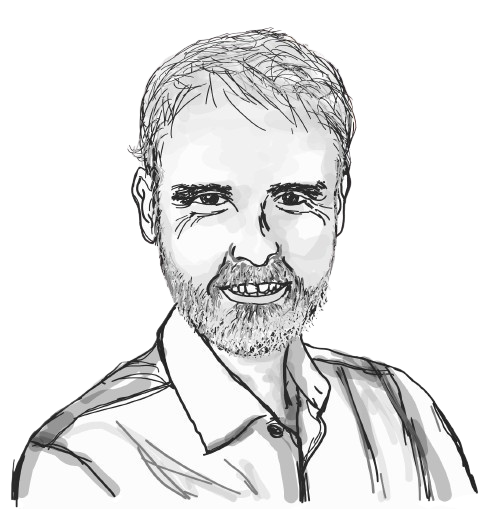

The Earth as a Cybernetic System
Carbon Cycles, Climate Feedbacks and the Limits of Planetary Regulation
Season 2 · Episode 10
The Earth as a Cybernetic System
How does the Earth regulate its carbon cycle, and what happens when climate feedbacks begin to amplify warming? Climate scientist Pep Canadell explores the intricate relationships between carbon emissions, natural sinks and planetary stability, revealing how understanding these interconnected processes can inform our collective response to climate change and net zero.
Listen
Guest speaker

Pep Canadell
Dr Pep Canadell is a Chief Research Scientist at CSIRO Environment, Executive Director of the Global Carbon Project, and Honorary Professor at the Australian National University’s Fenner School of Environment and Society. Originally trained in biology and terrestrial ecology at the University Autonomous of Barcelona, Catalonia in Spain, Pep has built an international research career spanning the United States and Australia. His research focuses on global greenhouse gas budgets, the vulnerability of Earth’s carbon sinks, carbon–climate feedbacks, and pathways to net-zero emissions. He has contributed to the Intergovernmental Panel on Climate Change (IPCC) for over two decades, authored more than 300 peer-reviewed papers, and is a Fellow of the Australian Academy of Science and other leading scientific academies. Recognised among the world’s most influential climate scientists, Pep actively connects scientific research with climate policy, decarbonisation strategies, and public understanding of climate change.